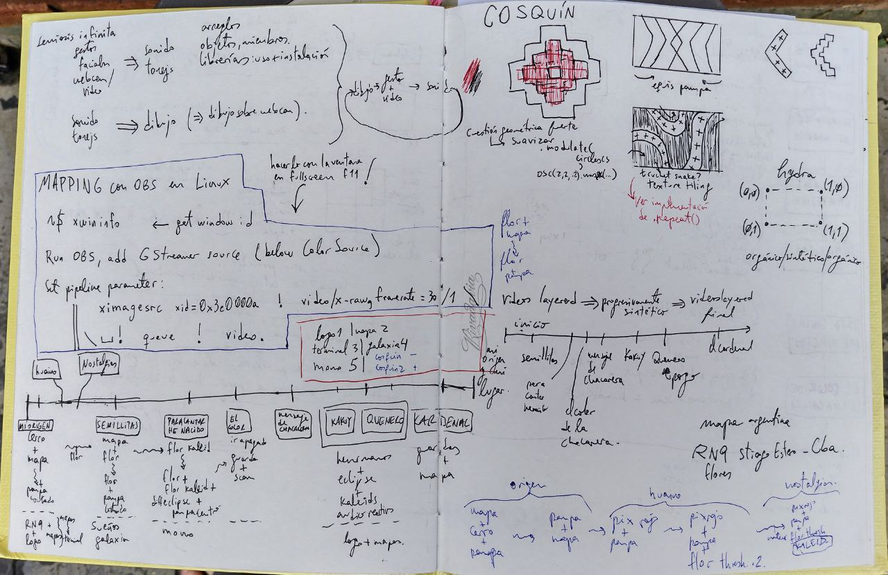

En esta clase les planteo una diversidad de ejercicios, buscando maximizar la probabilidad de que les esté proponiendo algo que les llame la atención.
Ante la mínima emoción al leerlos, les recomiendo intentar avanzar sobre ellos!
Les dejo la lista de ejercicios propuestos, en orden de complejidad:
Para practicar parametrizar como actividad exploratoriaAgarrar cualquier paso del paso a paso de esta clase y parametrizarlo buscando imprimirle una decisión estética intencional.
Para explorar el dibujo audiorreactivo y las relaciones gráfico-sonorasDado el paso 4 del paso a paso detectar cuándo no está sonando nada, y que el dibujo tenga otro comportamiento en ese caso.
Para explorar la referencia mimética y el concepto de laringe digitalDado el paso 5 del paso a paso adaptar el dibujo para que se asemeje a cuerdas vocales humanas.
Para explorar la complejización del comportamiento a lo largo del tiempoDado el paso 4 del paso a paso complejizar o bien la cuestión sonora o bien la cuestión gráfica con el paso del tiempo. Para ello deberás usar la variable i, o crear una nueva que se vaya actualizando con cada llamado a la función draw(). En cualquier caso, lo que tenemos es una variable que es siempre creciente: su valor va aumentando. Se puede explorar con funciones periódicas (seno, coseno, tangente,etc) que hagan que el comportamiento de las parametrizaciones que utilicen esa variable tenga esa misma característica de repetición. También se pueden explorar funciones de aceleración, les dejo una lista de ellas. Haciendo click en cualquiera al final aparece el código en javascript.
Para explorar interfaces del habla y las relaciones posibles entre el lenguaje español hablado y la acción de dibujar. Dado el ejemplo de reconocimiento automático de palabras en el habla generar un pequeño sistema visual que acompañe al recitado de un poema/canción/cuento de su elección. Pueden basarse en este otro ejemplo que programé
Creo que lo más importante es detectar ese germen de idea e intentar
cristalizarlo - con cualquier medio: escribiéndolo, dibujándolo, etc.
Cuando programamos nos enfrentamos ante una situación de libertad de
movimiento bastante inusual. Cuando estés en el medio de la jungla de la implementación, y
veas el laberinto de caminos que se bifurcan al que te metiste, tener
cristalizado el germen inicial te va a ayudar a que no pierdas ese hilo conductor.
Les muestro cómo lo hago yo.

Esta es una página de mi cuaderno de campo, donde dejo anotada aquellas cosas que me van produciendo emociones.
En particular en este caso el desafío era mis ganas de usar la guarda pampa: una guarda de los pueblos originarios de Argentina. Tenía que encontrar una forma de dibujarla con código para poder hacer una performance visual en vivo acompañando al artista folklórico Horacio Banegas.
Primer paso: registrar la emoción
Es crítico desarrollar estrategias que nos sirvan como guía en nuestros procesos creativos. El que yo encontré es registrar, y por eso se los recomiendo.
Dibujé la guarda pampa con lapiz y papel para entender con el cuerpo la geometría, y analizar complejidad de dibujado con código. Luego pensé para qué la usaría; de qué forma podría servir como semilla para dibujos más complejos. Esto se puede ver en el costado superior derecho del cuaderno.
Segundo paso: buscar en internet
Une nunca programa sole, ni tiene por qué hacerlo. Un programa no es más válido o "mejor" solo porque en el proceso no se buscó en internet o en un libro, o porque no se basó en soluciones anteriores. Dentro del campo de programación se suele proponer no "reinventar la rueda". Obviamente es un buen ejercicio, y un auto-desafío lindo del cual pueden surgir innovaciones y avances personales y de disciplinas enteras, pero no debe cumplir un rol imperativo en su forma de pensar el "no basarse en nada". Aclaro esto porque muchas disciplinas (sobre todo las artísticas) se rigen con el "culto a la originalidad", y los paradigmas que se difunden en la programación son radicalmente distintos. Programar muchas veces es emocionalmente dificil, programar en comunidad es una forma menos dolorosa de programar se las recomiendo.
Lo primero que hice fue buscar implementaciones en internet, las cuales no encontré ya que ese dibujo es muy específicamente argentino/latinoamericano. En este caso me encontré con la situación de tener que implementar "desde cero", es decir, sin un antecedente directo. Eso no me asustó porque dibujarlo y analizar la geometría con làpiz y papel me dio confianza en que podía implementarlo como shader, incluso con la complejidad técnica que involucra escribir shaders.
Tercer paso: Laberintos que se bifurcan
Ya sea basándonos en un esqueleto encontrado en internet, un pedazo de código donado por une amigue, encontrado en un libro o propuesto por Karen en el curso de construcción de sentidos, empezamos a implementar en una fase exploratoria. Es lo que en clase le llamé "entender la expresividad del círculo". De a pequeños pasos y siempre re-ejecutando el código, vamos parametrizando, reordenamos el código. Tenemos que intentar generar el reflejo automático para que ante las cosas que nos generen dudas las busquemos en la documentación. Como programadore nunca dejarás de hacer esto, ya que programar no es una actividad que se haga de memoria. Buscamos documentación (donde además suelen haber ejemplos) y nos animamos a romper de a partes para terminar de entender.
Si tengo colores, notas, conjuntos de datos, etc entonces tengo números (canales RGB, notas en una escala, una colección con elementos a acceder).
Si tengo números será interesante explorar qué rangos pueden tomar y que el resultado siga siendo interesante
Para implementar el dibujo, me basé en una primitiva "cuadrado" que está en el Libro de Shaders de Patricio Gonzalez Vivo. Con eso pude implementar la guarda pampa como un conjunto de cuadrados con un par de parámetros encontrados por accidente rompiendo el dibujo. Estos parámetros accidentales terminaron permitiéndome agregarle complejidad al dibujo y encontrar una forma de dibujar una guarda más avanzada, la cual desconocía cómo implementar previamente a la serendipia.
Por momentos dejar que la compu sugiera: perderse y dejarse guiar por el medio